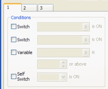
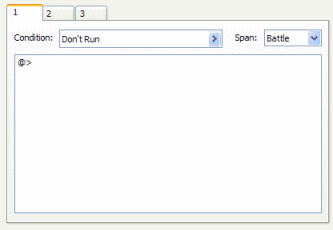

Events
Every "happening" in the game, from villagers who give you information
to item-filled treasure chests, is called an event.
Since the direction of the game is controlled entirely by events, even something
like the player exiting a town onto a field map must be configured as an event.
There are three types of events: map events, battle events, and common events.
The term "event" by itself generally refers to a map event.
- Map Events
- These are events that take place on the map screen, used for movement, conversations,
etc. Select [Mode], then [Event] from the main menu, then double-click on
a map to create a map event. Placing a large number of map events can put
a strain on the CPU--a safe amount would be 100 or fewer events per map.
- Battle Events
- These are events that take place on the battle screen. For example, you
can use a battle event to make an enemy transform when its HP drops below
a certain level. These events are accessed via [Troops] in the database.
- Common Events
- These generic events are called from map events and battle events, can be
configured to handle the use of special items, and so on. They are accessed
via [Common Events] in the database.

You can configure handling for several different items in a single map event.
This is done on an event page.
Each event page allows you to set 2 switches, a variable, and a selfswitch
as conditions for an event to "manifest". If more than one event page
satisfies the given conditions, the page with the highest number will be used.
- Switch
- Data stored as either ON or OFF throughout the game. For example, controls
information such as whether a player has received an order to defeat a monster
or whether a boss has been defeated.
- Variable
- Data stored as any integer (maximum 8 numbers long) throughout the game.
For example, controls information such as the hero's reputation level or the
number of items a player has gathered from around the world and given to a
particular person.
- Selfswitch
- A special switch for individual events. It has no visible effect, but rather
is used simply to display the status of a given event. For example, controls
information such as whether the player has opened a treasure chest.
Battle events also have event pages, but they're a little different from map
events. See Battle Events for more information.
Common events do not have event pages. However, you can set 1 switch as a condition
for autorun events and the like.
The condition(s) that actually set off a process defined under [List of Event Commands]
on an event page is called a trigger.
- Action Button
- The event runs when the player presses the action button (C) when in contact
with the event. The event also runs even if there's a counter tile between
the player and the event. Use this trigger for basic actions such as speaking
with villagers and examining treasure chests.
- Player Touch
- The event runs under the same conditions as the [Action Button] trigger, as
well as when the player uses the directional buttons to come in contact with
the event. The event will run when the player and event overlap as well, provided
that is permitted. Use this trigger for movement events.
- Event Touch
- The event runs under the same conditions as the [Player Touch] trigger,
as well as when the event comes in contact with the player. Use this to trigger
a battle when a player touches a monster wandering around the map.
- Autorun
- The event runs the moment it appears. It will continue to loop as long as
the condition(s) on the event page are being satisfied, so you must activate
a switch or a selfswitch at the appropriate time to modify the run conditions.
Use this trigger to force an event when, for example, moving onto a particular
map.
- Parallel Process
- The event runs at regular intervals as long as it is present. Parallel process
has different properties than normal process; because it's specially configured
to run parallel to other events running at the same time, using them requires
some caution. Use this trigger to check on a timer, flash lightning across
the screen at set intervals, and so on. You can make a game without using
parallel process triggers at all, so don't feel you have to know everything
there is to know about them.
Because common events don't have a tangible presence like map events, their
process can only be set to [None], [Autorun], and [Parallel Process] when they
are called. However, no matter what the trigger setting, you must be careful
when running parallel events called by a Parallel Process trigger. When you
want to run a regular event from a Parallel Process trigger, don't call a
common event directly; instead, you must use a switch to set off an Autorun
event.
Events that use parallel process put an especially large strain on the CPU.
Because condition changes brought about by switches and variables require judgments
as to whether an appearing or disappearing event is present, comparatively more
process time is needed for event pages on maps. Therefore, running multiple
parallel process events at any given time is not recommended.

Events that occur in battle are called battle events.
Event pages for battle events don't include the notion of the event "manifesting",
as they do for map events. Normally all event pages are checked in numeric order,
and the event is run as soon a page fulfills the given conditions.
There are 4 types of battle event conditions--number of turns used, enemy HP,
actor HP, and switch--and more than one can be specified at a time. Check the
Pop-up Hints for more information on each of these.
Commands that bring about some sort of change while a game is being played
are called event commands.
The contents of events that are being processed are defined by a list of the
necessary event commands. There are a total of 90 types of event commands, a
wide range including [Show Text], [Transfer Player], and [Battle Process].
List of event commands can be edited in the same way as all event types. Follow these
steps to add a new event command:
- Double-click a row marked by "@>".
- The [Event Command] dialog box will appear. Click the button for the command
you'd like to add. You can also call up a Pop-up Hint for each button to read
a simple explanation of each command.
- For most commands, a dialog box will appear allowing you to set concrete
actions for the event command. When the necessary settings are complete, click
[OK].
- Your new event command will appear in the row you double-clicked in step
1.
Once an event command is selected from the list of event commands, right-click
to make a pop-up menu appear that will allow you to copy, paste, and use other
editing commands. Press [Shift] while selecting event commands to work with more
than one at a time.
To display messages on the game screen, use the [Show Text] event command.
This is usually the most frequently used of all event commands.
The following control characters are available for use in text mesages:
- \V[n]
- Will be replaced by the value in variable number n.
- \N[n]
- Will be replaced by the name of actor number n.
- \C[n]
- Displays the characters that follow in color number n.
- \G
- Opens the money reserves window.
- \\
- Will be replaced by the '\' character.
Press [F2] while entering text to preview how the message window will look in
the actual game.